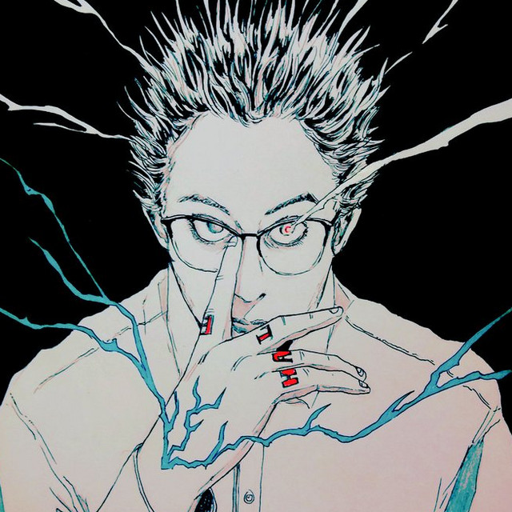

The sound of Now and that is to come, The screaming id of the the internet begging to
be born. A lot of the artists at the vanguard of hyperpop which, to crudely summarise, is music that pushes
the most sugary, euphoric aspects of pop music to the extreme are moving.
Starting Off from the tip of the iceberg...
SEBii is a weird pick for this list being that he is a more of classic pop artist BUT, ((atleast acording to me)) he does posses in himself that germ of hyperpop that is so ellsuive and hard to define. His origins follow the tracks of a classic hyperpop artist and its very much audible in his work. His tempo and a novel use of autotune to create a truly unique sound realy set him apart in the crowded hyperpop scene. Also hes efortlessly halarious and its never unintentional. SEBii understands his audiance and capable of making fun of himself without it feeling self deprecating, a great weilder of irony. The lyrics have a structure of a ironic joke, they are designed to be memetic.
BOTTOM line, i find him funny and i really like his music
The Hits...
we plunge...
How do i describe a wells?
BOTTOM line, i find him funny and i really like his music

The Hits...
and deeper we go...
How do i describe a wells? if ethereal could be isolated as a genre it would be ocupied at its head as
BOTTOM line, i find him funny and i really like his music